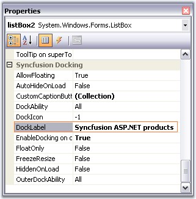
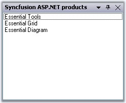
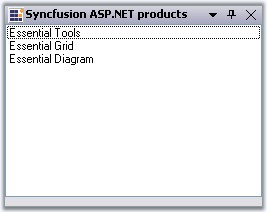

Caption Label
Docking Manager lets you set the caption label using DockLabel property of the particular control, through designer, and programmatically by using SetDockLabel method. Alignment of these labels can be specified using DockLabelAlignment property.
|
DockingManager Property |
Description |
|
DockLabelAlignment |
Sets the dock label alignment. The different alignments options are,
Left, Right and Center. |
|
[C#]
this.dockingManager.SetDockLabel(this.listBox1, "Syncfusion ASP.NET products"); this.dockingManager1.DockLabelAlignment = Syncfusion.Windows.Forms.Tools.DockLabelAlignmentStyle.Left; |
|
[VB.NET]
Me.dockingManager.SetDockLabel(Me.listBox1, "Syncfusion ASP.NET products") Me.dockingManager1.DockLabelAlignment = Syncfusion.Windows.Forms.Tools.DockLabelAlignmentStyle.Left |

Figure 56: Property Grid of Docked Control Highlighting DockLabel Property

Figure 57: Caption set for the Docked Control
Custom CaptionLabel aligned to left
 Note: DockLabelAlignment can also be set
easily using Task Window.
Note: DockLabelAlignment can also be set
easily using Task Window.
Image for the Caption
The captions can also hold images which can be enabled using ShowCaptionImages property.
|
[C#]
this.dockingManager1.ShowCaptionImages = true; |
|
[VB.NET]
Me.dockingManager1.ShowCaptionImages = True |
The caption icons / the images can be set using this DockIcon property of the docked control. To achieve this through designer, follow the below steps.
1. Create a docked window.
2. Add ImageList and add the images to it.
3. Select the image list through the ImageList property of the docking manager.
4. Now go to the property of the docked control to which you have to set the dock icon.
5. Give the image index value to the DockIcon property.
6. Run the application.
7. The corresponding control will be displayed with the icon that is set.
8. To disable displaying the icon, set the value as -1.
|
DockedControl Property |
Description |
|
DockIcon |
Index of the image associated with this docking window. |
|
[C#]
this.dockingManager1.SetDockIcon(this.listBox1, 2); |
|
[VB.NET]
Me.DockingManager1.SetDockIcon(Me.ListBox1, 2) |

Figure 58: Caption Image set for the Docked Control
Caption Label with Dock Icon
Methods for setting Caption icons and labels are as follows.
|
Methods |
Description |
|
SetDockIcon |
Sets the Icon or the image for the docking window by passing the image icon as a parameter for this method.
Ctrl - Represents the dock enabled control. image - Icon representing the docking window. |
|
SetDockIcon(Overloaded) |
This overloaded method returns the index of the image associated with the docking window.
Ctrl - Indicates the docking window. int - A zero-based index into the ImageList property value. |
|
SetDockLabel |
Sets the text to be displayed in the docking window caption.
Ctrl - Indicates the docking window. strText - A string value representing the text caption. |
Note:
Background and
foreground appearance of the captions
can be customized.
See Also